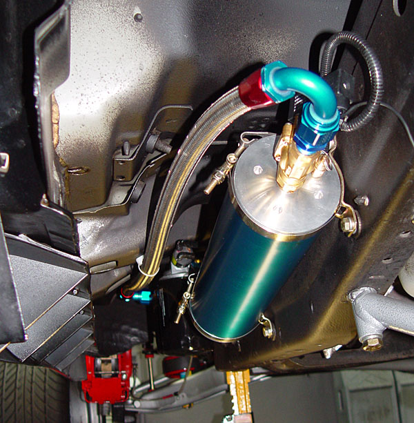
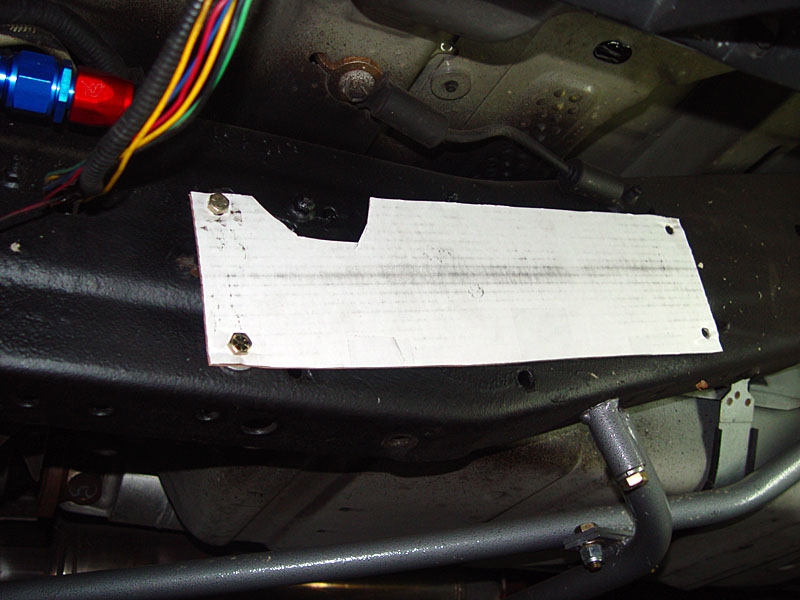
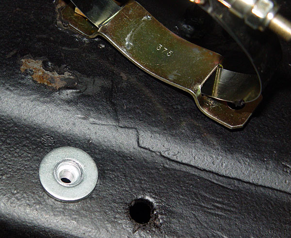
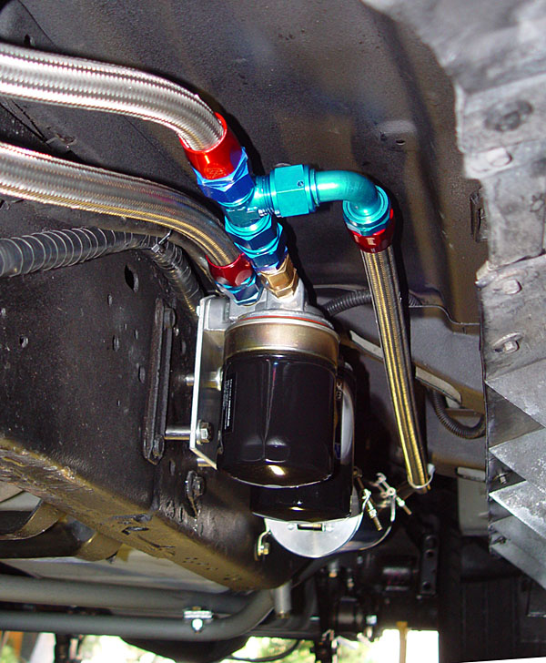
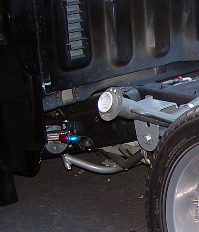
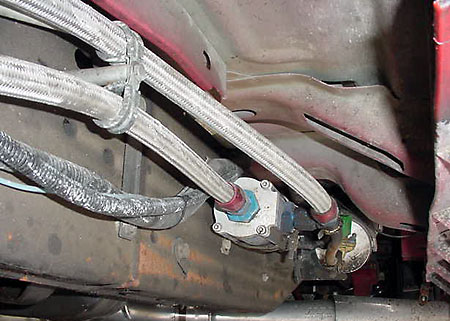

|
Accusump Installation |
|

The parts that I used are: 3 qt. Accusump (#24-006) I used -12 lines. The E.P.C. electric valve is located on the Accusump. It is powered from an ignition-on source, so as soon as the truck gets power, the valve opens, and the engine gets instantly flooded with pressurized oil. Since I installed a low pressure warning LED, I can verify that the engine gets oil pressure within a second of turning the ignition on. This shot was taken from the driver's side rear, facing forward. The AN fitting is a 150� fitting. |
|
As with most things, adapting an Accusump to the Lightning is tricky. The installation objectives are:
I could not find a mounting area that satisfied all three. For someone not using remove filters, my remote filter location is probably best. |
| Here is a shot of the cardboard template that I used for the mockup. I drilled the frame for 3/8" rivnuts. |
| I used a couple of washers under the bottom rivnut heads to make the surface level. |
|

This shot was taken under the driver's side door. The Accusump is placed on the return line of my remote filters. There is a check valve installed on the filter housing to to ensure that the oil from the Accusump goes into the engine, rather than backfilling the filters.
|
|  Here is an orientation shot. |
|
For
comparison, here is Stan Martin's CM Filter/Accusump setup.
Nice, clean installation, but the oil side is down, not up.
That allows the line to be shorter, but according to Canton could
allow air bubbles to become trapped.
Note Stan's custom standoff. |
| The system works perfectly. As soon as you turn the ignition on, the oil pressure shoots up to maximum. The Accusump and lines also add about 3 quarts of oil to the system. |